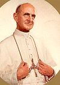
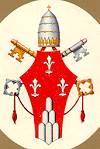

 |
Sollemnis Professio
Fidei Proclaimed by his Holiness Pope Paul VI On June 30, 1968 |
 |
1. With This Solemn Liturgy We end the celebration of the nineteenth centenary of the martyrdom of the holy Apostles Peter and Paul, and thus close the Year of Faith. We dedicated it to the commemoration of the holy Apostles in order that We might give witness to Our steadfast will to be faithful to the Deposit of Faith*(1) which they transmitted to us, and that We might strengthen Our desire to live by it in the historical circumstances in which the Church finds herself in her pilgrimage in the midst of the world.
2. We feel it Our duty to give public thanks to all who responded to Our invitation by bestowing on the Year of Faith a splendid completeness through the deepening of their personal adhesion to the Word of God, through the renewal in various communities of the Profession of Faith, and through the testimony of a Christian life. To Our Brothers in the Episcopate especially, and to all the faithful of the holy Catholic Church, We express Our appreciation and We grant Our Blessing.
3. Likewise, We deem that We must fulfill the mandate entrusted by Christ to Peter, whose Successor We are, the last in merit; namely, to confirm Our Brothers in the Faith*(2). With the awareness, certainly, of Our human weakness, yet with all the strength impressed on Our spirit by such a command, We shall accordingly make a Profession of Faith, pronounce a creed which, without being strictly speaking a dogmatic definition, repeats in substance, with some developments called for by the spiritual condition of our time, the Creed of Nicea, the creed of the immortal tradition of the holy Church of God.
4. In making this Profession, We are aware of the disquiet which agitates certain modern quarters with regard to the Faith. They do not escape the influence of a world being profoundly changed, in which so many certainties are being disputed or discussed. We see even Catholics allowing themselves to be seized by a kind of passion for change and novelty. The Church, most assuredly, has always the duty to carry on the effort to study more deeply and to present, in a manner ever better adapted to successive generations, the unfathomable mysteries of God, rich for all in fruits of salvation. But at the same time the greatest care must be taken, while fulfilling the indispensable duty of research, to do no injury to the teachings of Christian doctrine. For that would be to give rise, as is unfortunately seen in these days, to disturbance and perplexity in many faithful souls.
5. It is important in this respect to recall that, beyond scientifically verified phenomena, the intellect which God has given us reaches that which Is, and not merely the subjective expression of the structures and development of consciousness; and, on the other hand, that the task of interpretation - of hermeneutics - is to try to understand and extricate, while respecting the word expressed, the sense conveyed by a text, and not to recreate, in some fashion, this sense in accordance with arbitrary hypotheses.
6. But above all, We place Our unshakable confidence in the Holy Spirit, the Soul of the Church, and in theological Faith upon which rests the life of the Mystical Body. We know that souls await the word of the Vicar of Christ, and We respond to that expectation with the instructions which We regularly give. But today We are given an opportunity to make a more solemn utterance.
7. On this day which is chosen to close the Year of Faith, on this feast of the Blessed
Apostles Peter and Paul, We have wished to offer to the living God the homage of a
Profession of Faith. And as once at Caesarea Philippi the Apostle Peter spoke on behalf of
the twelve to make a true confession, beyond human opinions, of Christ as Son of the living
God, so today his humble Successor, Pastor of the Universal Church, raises his voice to
give, on behalf of all the People of God, a firm witness to the divine Truth entrusted to
the Church to be announced to all nations.
We have wished Our Profession of Faith to be to a high degree complete and explicit, in
order that it may respond in a fitting way to the need of Light felt by so many faithful
souls, and by all those in the world, to whatever spiritual family they belong, who are in
search of the Truth.
To the glory of God most holy and of Our Lord Jesus Christ, trusting in the aid of the
Blessed Virgin Mary and of the holy Apostles Peter and Paul, for the profit and edification
of the Church, in the name of all the pastors and all the faithful, We now pronounce this
Profession of Faith, in full spiritual communion with you all, beloved Brothers and
Sons.
8. We believe in one only God, Father, Son and Holy Spirit, creator of things visible such as this world in which our transient life passes, of things invisible such as the pure spirits which are also called angels*(3), and creator in each man of his spiritual and immortal soul.
9. We believe that this only God is absolutely one in His infinitely holy essence as
also in all His perfections, in His omnipotence, His infinite knowledge, His providence,
His will and His love. He is He who is, as He revealed to Moses*(4); and He is love, as the apostle John teaches us*(5): so that these two names, being and love, express ineffably the same
divine reality of Him who has wished to make Himself known to us, and who, "dwelling in
light inaccessible"*(6), is in Himself above every name, above
every thing and above every created intellect. God alone can give us right and full
knowledge of this reality by revealing Himself as Father, Son and Holy Spirit, in whose
eternal life we are by grace called to share, here below in the obscurity of faith and
after death in eternal light.
The mutual bonds which eternally constitute the Three Persons, Who are each One and the
same Divine Being, are the Blessed inmost Life of God thrice Holy, infinitely beyond all
that we can conceive in human measure*(7). We give thanks,
however, to the divine goodness that very many believers can testify with us before men to
the unity of God, even though they know not the mystery of the most holy Trinity.
10. We believe then in the Father who eternally begets the Son; in the Son, the Word of God, who is eternally begotten; in the Holy Spirit, the uncreated person who proceeds from the Father and the Son as their eternal love. Thus in the Three Divine Persons, coaeternae sibi et coaequales*(8), the life and beatitude of God perfectly one superabound and are consummated in the supreme excellence and glory proper to uncreated being, and always "there should be venerated unity in the Trinity and Trinity in the unity"*(9).
11. We believe in our Lord Jesus Christ, who is the Son of God. He is the Eternal Word, born of the Father before time began, and one in substance with the Father, homo-ousios to Patri*(10), and through Him all things were made. He was incarnate of the Virgin Mary by the power of the Holy Spirit, and was made man: equal therefore to the Father according to His divinity, and inferior to the Father according to His humanity*(11); and himself one, not by some impossible confusion of his natures, but by the unity of His Person*(12).
12. He dwelt among us, full of grace and truth. He proclaimed and established the
Kingdom of God and made us know in Himself the Father. He gave us His new commandment to
love one another as He loved us. He taught us the way of the beatitudes of the Gospel:
poverty in spirit, meekness, suffering borne with patience, thirst after justice, mercy,
purity of heart, will for peace, persecution suffered for justice sake. Under Pontius
Pilate He suffered - the Lamb of God bearing on Himself the sins of the world, and He died
for us on the Cross, saving us by His redeeming blood. He was buried, and, of His own
power, rose on the third day, raising us by His resurrection to that sharing in the Divine
Life which is the life of Grace. He ascended to heaven, and He will come again, this time
in glory, to judge the living and the dead: each according to his merits, those who have
responded to the love and piety of God going to eternal life, those who have refused them
to the end going to the fire that is not extinguished.
And His Kingdom will have no end.
13. We believe in the Holy Spirit, who is Lord, and Giver of Life, who is adored and glorified together with the Father and the Son. He spoke to us by the prophets; He was sent by Christ after His resurrection and His ascension to the Father; He illuminates, vivifies, protects and guides the Church; He purifies the Church's members if they do not shun His Grace. His action, which penetrates to the inmost of the soul, enables man to respond to the call of Jesus: Be perfect as your Heavenly Father is perfect (Mt. 5:48).
14. We believe that Mary is the Mother, who remained ever a Virgin, of the Incarnate Word, our God and Savior Jesus Christ*(13), and that by reason of this singular election, she was, in consideration of the merits of her Son, redeemed in a more eminent manner*(14), [and] preserved from all stain of original sin*(15) and filled with the gift of grace more than all other creatures*(16).
15. Joined by a close and indissoluble bond to the Mysteries of the Incarnation and Redemption*(17), the Blessed Virgin, the Immaculate, was at the end of her earthly life raised body and soul to heavenly glory*(18) and likened to her risen Son in anticipation of the future lot of all the just; and we believe that the Blessed Mother of God, the New Eve, Mother of the Church*(19), continues in heaven her maternal role with regard to Christ's members, cooperating with the birth and growth of divine life in the souls of the redeemed*(20).
16. We believe that in Adam all have sinned, which means that the original offense committed by him caused human nature, common to all men, to fall to a state in which it bears the consequences of that offense, and which is not the state in which it was at first in our first parents, established as they were in holiness and justice, and in which man knew neither evil nor death. It is human nature so fallen, stripped of the grace that clothed it, injured in its own natural powers and subjected to the dominion of death, that is transmitted to all men, and it is in this sense that every man is born in sin. We therefore hold, with the Council of Trent, that original sin, is transmitted with human nature, "not by imitation, but by propagation" and that it is thus "proper to everyone"*(21).
17. We believe that Our Lord Jesus Christ, by the sacrifice of the Cross redeemed us from original sin and all the personal sins committed by each one of us, so that, in accordance with the word of the Apostle, "where sin abounded, grace did more abound"*(22).
18. We believe in one Baptism instituted by our Lord Jesus Christ for the remission of sins. Baptism should be administered even to little children who have not yet been able to be guilty of any personal sin, in order that, though born deprived of supernatural grace, they may be reborn "of water and the Holy Spirit" to the Divine Life in Christ Jesus*(23).
19. We believe in One, Holy, Catholic, and Apostolic Church, built by Jesus Christ on that rock which is Peter. She is the Mystical Body of Christ; at the same time a visible society instituted with hierarchical organs, and a spiritual community; the Church on earth, the pilgrim People of God here below, and the Church filled with heavenly blessings; the germ and the first fruits of the Kingdom of God, through which the work and the sufferings of Redemption are continued throughout human history, and which looks for its perfect accomplishment beyond time in glory*(24). In the course of time, the Lord Jesus forms His Church by means of the Sacraments emanating from His plenitude*(25). By these she makes her members participants in the Mystery of the Death and Resurrection of Christ, in the grace of the Holy Spirit who gives her life and movement*(26). She is therefore holy, though she has sinners in her bosom, because she herself has no other life but that of grace: it is by living by her life that her members are sanctified; it is by removing themselves from her life that they fall into sins and disorders that prevent the radiation of her sanctity. This is why she suffers and does penance for these offenses, of which she has the power to heal her children through the blood of Christ and the gift of the Holy Spirit
20. Heiress of the divine promises and daughter of Abraham according to the Spirit, through that Israel whose Scriptures she lovingly guards, and whose Patriarchs and prophets she venerates; founded upon the Apostles and handing on from century to century their ever-living Word and their powers as pastors in the successor of Peter and the bishops in communion with him; perpetually assisted by the Holy Spirit, she has the charge of guarding, teaching, explaining and spreading the Truth which God revealed in a then veiled manner by the prophets, and fully by the Lord Jesus. We believe all that is contained in the Word of God written or handed down, and that the Church proposes for belief as divinely revealed, whether by a solemn judgement or by the Ordinary and Universal Magisterium*(27). We believe in the infallibility enjoyed by the successor of Peter when he teaches " Ex Cathedra " as pastor and teacher of all the faithful*(28), and which is assured also to the episcopal body when it exercises with him the supreme Magisterium*(29).
21. We believe that the Church founded by Jesus Christ and for which He prayed is indefectibly one in faith, in worship and in the bond of hierarchical communion. In the bosom of this Church, the rich variety of liturgical rites and the legitimate diversity of theological and spiritual heritages and special disciplines, far from injuring her unity, make it more manifest*(30).
22. Recognizing also the existence, outside the organism of the Church of Christ, of numerous elements of truth and sanctification which belong to her as her own and tend to Catholic unity*(31), and believing in the action of the Holy Spirit who stirs up in the heart of the disciples of Christ love of this unity*(32), we entertain the hope that the Christians who are not yet in the full communion of the One only Church will one day be reunited in one flock with one only shepherd.
23. We believe that the Church is necessary for salvation, because Christ, who is the sole mediator and way of salvation, renders Himself present for us in His Body which is the Church*(33). But the divine design of salvation embraces all men; and those who without fault on their part do not know the Gospel of Christ and His Church, but seek God sincerely, and under the influence of grace endeavor to do His will as recognized through the promptings of their conscience, they, in a number known only to God, can obtain salvation*(34).
24. We believe that the Mass. celebrated by the priest representing the person of Christ by virtue of the power received through the Sacrament of Orders, and offered by him in the name of Christ and the members of His Mystical Body, is the Sacrifice of Calvary rendered sacramentally present on our altars. We believe that as the bread and wine consecrated by the Lord at the Last Supper were changed into His Body and His Blood which were to be offered for us on the Cross, likewise the bread and wine consecrated by the priest are changed into the Body and Blood of Christ enthroned gloriously in heaven, and we believe that the mysterious presence of the Lord, under what continues to appear to our senses as before, is a true, real and substantial presence*(35).
25. Christ cannot be thus present in this sacrament except by the change into His Body of the reality itself of the bread and the change into His Blood of the reality itself of the wine, leaving unchanged only the properties of the bread and wine which our senses perceive. This mysterious change is very appropriately called by the Church 'transubstantiation'. Every theological explanation which seeks some understanding of this mystery must, in order to be in accord with Catholic faith, maintain that in the reality itself, independently of our mind, the bread and wine have ceased to exist after the Consecration, so that it is the adorable Body and Blood of the Lord Jesus that from then on are really before us under the sacramental species of bread and wine*(36), as the Lord willed it, in order to give Himself to us as food and to associate us with the unity of His Mystical Body*(37).
26. The unique and indivisible existence of the Lord glorious in heaven is not multiplied, but is rendered present by the sacrament in the many places on earth where Mass is celebrated. And this existence remains present, after the sacrifice, in the Blessed Sacrament which is, in the tabernacle, the living heart of each of our churches. And it is our very sweet duty to honor and adore in the blessed Host which our eyes see, the Incarnate Word whom they cannot see, and who, without leaving heaven, is made present before us.
27. We confess that the Kingdom of God begun here below in the Church of Christ is not of this world whose form is passing, and that its proper growth cannot be confounded with the progress of civilization, of science or of human technology, but that it consists in an ever more profound knowledge of the unfathomable riches of Christ, an ever stronger hope in eternal blessings, an ever more ardent response to the love of God, and an ever more generous bestowal of grace and holiness among men. But it is this same love which induces the Church to concern herself constantly about the true temporal welfare of men. Without ceasing to recall to her children that they have not here a lasting dwelling, she also urges them to contribute, each according to his vocation and his means, to the welfare of their earthly city, to promote justice, peace and brotherhood among men, to give their aid freely to their brothers, especially to the poorest and most unfortunate. The deep solicitude of the Church, the Spouse of Christ, for the needs of men, for their joys and hopes, their griefs and efforts, is therefore nothing other than her great desire to be present to them, in order to illuminate them with the light of Christ and to gather them all in Him, their only Savior. This solicitude can never mean that the Church conform herself to the things of this world, or that she lessen the ardor of her expectation of her Lord and of the eternal Kingdom.
28. We believe in the life eternal. We believe that the souls of all those who die in the grace of Christ - whether they must still be purified in the fire of Purgatory, or whether from the moment they leave their bodies Jesus takes them to paradise as He did for the Good Thief - are the People of God in the eternity beyond death, which will be finally conquered on the day of the Resurrection when these souls will be reunited with their bodies.
29. We believe that the multitude of those gathered around Jesus and Mary in Paradise forms the Church of Heaven where in eternal beatitude they see God as He Is*(38), and where they also, in different degrees, are associated with the holy Angels in the divine rule exercised by Christ in glory, interceding for us and helping our weakness by their brotherly care*(39).
30. We believe in the communion of all the faithful of Christ, those who are pilgrims on
earth, the dead who are attaining their purification, and the blessed in heaven, all
together forming one Church; and We believe that in this communion the merciful love of God
and His saints is ever listening to our prayers, as Jesus told us: Ask and you will
receive*(40).
and the life of the world to come.
Blessed be God Thrice Holy. Amen.
1. Cf. 1 Tim. 6:20.
2. Cf. Lk. 22:32.
3. Cf Dz.-Sch. 3002.
4. Cf Ex. 3:14.
5. Cf 1 Jn. 4:8.
6. Cf 1 Tim. 6:16.
7. Cf Dz.-Sch. 804.
8. Cf Dz.-Sch. 75.
9. Cf. ibid.
10. Cf Dz.-Sch. 150.
11. Cf Dz.-Sch.76.
12. Cf Ibid.
13. Cf Dz.-Sch. 251-252.
14. Cf Lumen Gentium, 53.
15. Cf Dz.-Sch. 2803.
16. Cf Lumen Gentium, 53.
17. Cf Lumen Gentium, 53, 58, 61.
18. Cf Dz.-Sch. 3903.
19. Cf Lumen Gentium, 53, 58, 61, 63; Cf Paul Vl, Alloc. for the Closing of the Third Session of the Second Vatican Council: AAS LVI [1964] 1016; Cf. Exhort. Apost. Signum Magnum, Introd.
20. Cf Lumen Gentium, 62; cf Paul Vl, Exhort. Apost. Signum Magnum, p 1, n. 1.
21. Cf Dz.-Sch. 1513.
22. Cf Rom. 5:20.
23. Cf Dz.-Sch. 1514.
24. Cf. Lumen Gentium, 8, 5.
25. Cf Lumen Gentium, 7, 11.
26. Cf Sacrosanctum Concilium, 5, 6; cf Lumen Gentium, 7, 12, 50.
27. Cf Dz.-Sch. 3011.
28. Cf Dz.-Sch. 3074.
29. Cf Lumen Gentium, 25.
30. Cf. Lumen Gentium, 23; cf Orientalium Ecclesiarum 2, 3, 5, 6.
31. Cf Lumen Gentium, 8.
32. Cf Lumen Gentium, 15.
33. Cf Lumen Gentium, 14.
34. Cf Lumen Gentium, 16.
35. Cf Dz.-Sch. 1651.
36. Cf Dz.-Sch. 1642,1651-1654; Paul Vl, Enc. Mysterium Fidei.
37. Cf S.Th., 111,73,3.
38. Cf I Jn. 3:2; Dz.-Sch. 1000.
39. Cf Lumen Gentium, 49.
40. Cf Lk. 10:9-10; Jn. 16:24.